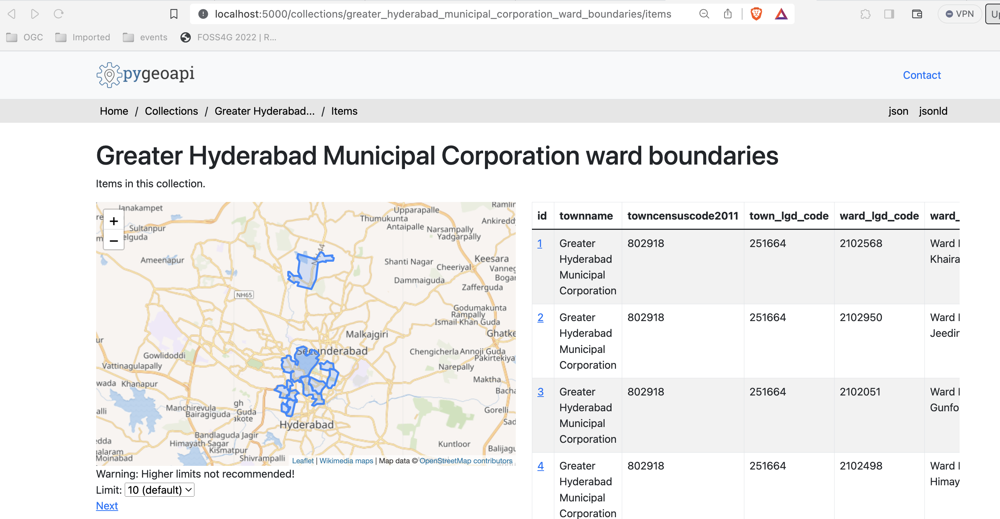

Exercise 2 - Vector data via OGC API - Features
OGC API - Features provides a Web API to access vector data (geometries and their attributes). While the core specification covers basic data access and query, additional related standards and extensions are in development for the following capabilities:
- OGC API - Features - Part 1: Core provides basic access and query capabilities
- OGC API - Features - Part 2: Coordinate Reference Systems by Reference enables the import and export of any data according to dedicated projections
- OGC API - Features - Part 3: Filtering (draft) adds the ability for complex queries using Common Query Language (CQL)
- OGC API - Features - Part 4: Create, Replace, Update and Delete (draft) adds transactional capabilities
pygeoapi support
pygeoapi supports all of the above OGC API - Features specification parts (Part 3 is dependent on backend support i.e. Elasticsearch).
Note
See the official documentation for more information on supported vector backends
Note
See the official documentation for more information on CQL support
Next, we are going to explore how-to publish vector data using a GeoPackage and a Elasticsearch backend.
Publish a GeoPackage
In the previous section we demonstrated the steps involved to add a dataset to pygeoapi and update the configuration. In this exercise we are going to publish another vector file, this time from a GeoPackage (SQLite3) data source.
Tip
It may be helpful to open the dataset in QGIS while adding and updating your pygeoapi server to easily evaluate table attributes, names, spatial properties and CRS.
Let's add the file workshop/exercises/data/cp-tartu2.gpkg.zip:
Update the pygeoapi configuration
First, let's unzip the file cptartu2.gpkg.zip to cptartu2.gpkg.
Then, open the pygeoapi configuration file in a text editor.
Find the line # START - EXERCISE 2 - cadastral parcels Tartu.
Add a new dataset section by uncommenting the lines up to # END - EXERCISE 2 - cadastral parcels Tartu:
1 2 3 4 5 6 7 8 9 10 11 12 13 14 15 16 17 18 19 20 21 22 23 24 | |
Save the file and restart Docker Compose. Navigate to http://localhost:5000/collections to evaluate whether the new dataset with title "Tartu Cadastral Parcels" has been published.
Note
The SQLite driver incidentally has challenges to open the GeoPackage extension on MacOS. Consult the official documentation or try with an alternative data format.
Publish a GeoJSON using Elasticsearch
If you want to explore publishing vector tiles using Elasticsearch clone this fork of pygeoapi:
git checkout -b ogcapi-ws https://github.com/doublebyte1/pygeoapi.git
In alternative, you can download a zip file from this link.
Then change into the docker/examples/elastic folder, and run the docker-compose file:
cd docker/examples/elastic
docker-compose up
This configuration snippet, enables publishing the file greater_hyderabad_municipal_corporation_ward_boundaries.geojson as OGC API - Features:
1 2 3 4 5 6 7 8 9 10 11 12 13 14 15 16 17 18 19 20 21 22 23 24 25 26 27 | |
Wait until the data was ingested into an elastic index, and pygeoapi starts. You can check the logs using:
docker-compose logs --follow
After the server has started you can access the collection page here:
http://localhost:5000/collections/greater_hyderabad_municipal_corporation_ward_boundaries
And the feature items here:
http://localhost:5000/collections/greater_hyderabad_municipal_corporation_ward_boundaries/items

pygeoapi as a WFS proxy
You can check the "pygeoapi as a Bridge to Other Services" section to learn how to publish WFS as OGC API - Features.
Client access
QGIS
QGIS is one of the first GIS Desktop clients which added support for OGC API - Features. Support has been integrated into the existing WFS provider.
Open an OGC API - Features collection in QGIS
Follow the steps to add some collections from an OGC API - Features enpoint:
- Open QGIS (if you don't have QGIS, you can use OSGeoLive)
- From the Layer menu, select
Add Layer>Add WFS layer - From the
Data source managerpanel, choose 'New connection'

- Add the URL https://demo.pygeoapi.io/master (or the address of a local server)
- You can now click the
detectbutton and QGIS will notice you are configuring an OGC API - Features endpoint - QGIS facilitates to set page size (request is split in multiple requests)
- for points you can easily set it to 2500
- for some polygons with high density, 100 can already be slow
- Press
OKto save the connection and return to the previous screen - Now click the
Connectbutton to retireve the collections of the service

- You can now add collections to your QGIS project
- You can also build a query to add a subset of the collection
- Close the
Data source manager. Notice that QGIS applied a default styling just like it would if you add a file based layer. You can work with the collection in a similar way; identify, apply styling, filter, export, etc.
Tip
Activate the Debugging/Development Tools Panel (right click anywhere on the toolbar icons and select). It will display HTTP traffic within QGIS and is a valuable tool in debugging failing connections.
Note
An increasing number of GIS Desktop clients add support for OGC API's in subsequent releases. For example ArcGIS Pro supports OGC API - Features since release 2.8.
GDAL/OGR - Advanced
GDAL/OGR provides support for OGC API - Features. This means you can use ogrinfo, ogr2ogr to query and convert data from OGC API - Features endpoints just like any other vector data source. This also means you can make connections to OGC API - Features endpoints from any software which has an interface to GDAL, such as MapServer, GeoServer, Manifold, FME, ArcGIS, etc.
Use OGR to interact with OGC API - Features
- Verify you have a recent GDAL installed, else use GDAL from OSGeoLive
- Run
ogrinfoon the command line to verify a connection to OGC API - Features
ogrinfo OAPIF:https://demo.pygeoapi.io/master/collections/obs
Now, let's convert the observations into a shapefile
ogr2ogr -f "ESRI Shapefile" obs.shp OAPIF:https://demo.pygeoapi.io/master/collections/obs
Note
You can even use OGR to append new features to an OGC API - Features collection which supports transactions (pygeoapi transaction support is planned for future implementation)
OWSLib - Advanced
OWSLib is a Python library to interact with OGC Web Services and supports a number of OGC APIs including OGC API - Features.
Interact with OGC API - Features via OWSLib
If you do not have Python installed, consider running this exercise in a Docker container. See the Setup Chapter.
pip3 install owslib
Then start a Python console session with: python3 (stop the session by typing exit()).
>>> from owslib.ogcapi.features import Features
>>> w = Features('https://demo.pygeoapi.io/master')
>>> w.url
'https://demo.pygeoapi.io/master'
>>> conformance = w.conformance()
{u'conformsTo': [u'http://www.opengis.net/spec/ogcapi-features-1/1.0/conf/core', u'http://www.opengis.net/spec/ogcapi-features-1/1.0/conf/oas30', u'http://www.opengis.net/spec/ogcapi-features-1/1.0/conf/html', u'http://www.opengis.net/spec/ogcapi-features-1/1.0/conf/geojson']}
>>> api = w.api() # OpenAPI document
>>> collections = w.collections()
>>> len(collections['collections'])
13
>>> feature_collections = w.feature_collections()
>>> len(feature_collections)
13
>>> lakes = w.collection('lakes')
>>> lakes['id']
'lakes'
>>> lakes['title']
'Large Lakes'
>>> lakes['description']
'lakes of the world, public domain'
>>> lakes_queryables = w.collection_queryables('lakes')
>>> len(lakes_queryables['properties'])
6
>>> lakes_query = w.collection_items('lakes')
>>> lakes_query['features'][0]['properties']
{u'scalerank': 0, u'name_alt': None, u'admin': None, u'featureclass': u'Lake', u'id': 0, u'name': u'Lake Baikal'}
Note
See the official OWSLib documentation for more examples.
Summary
Congratulations! You are now able to publish vector data to pygeoapi.